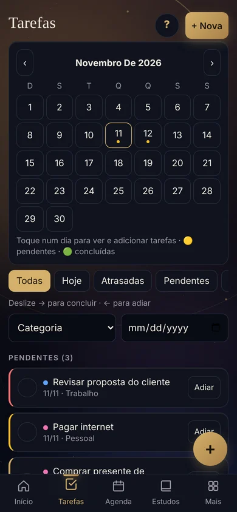

ORGANIZAÇÃO PESSOAL
Kairós
Um app instalável que reúne tarefas, agenda, estudos, hábitos e metas. A coruja Glau guia o visitante pelas telas.
Como foi feito
O painel Hoje reúne compromissos, tarefas e hábitos para consulta rápida. Os dados ficam no aparelho, e os registros podem ser exportados em PDF ou salvos em um backup JSON.